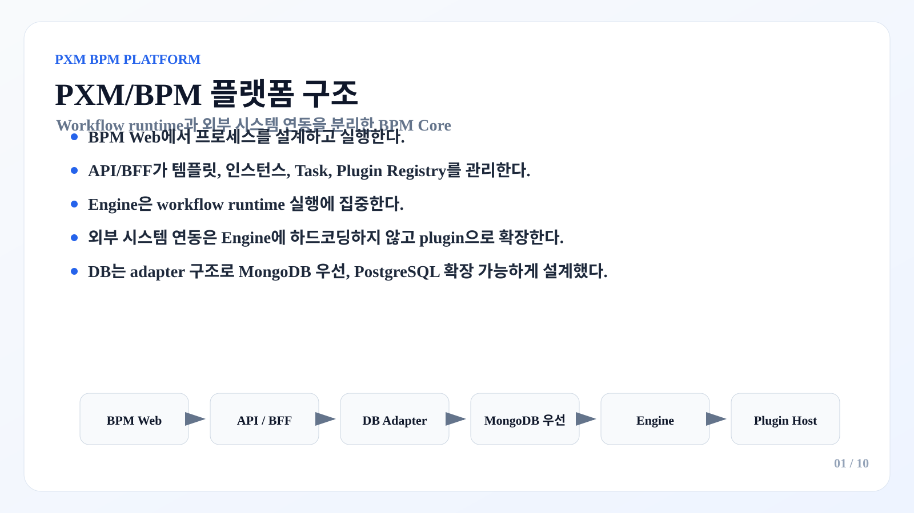
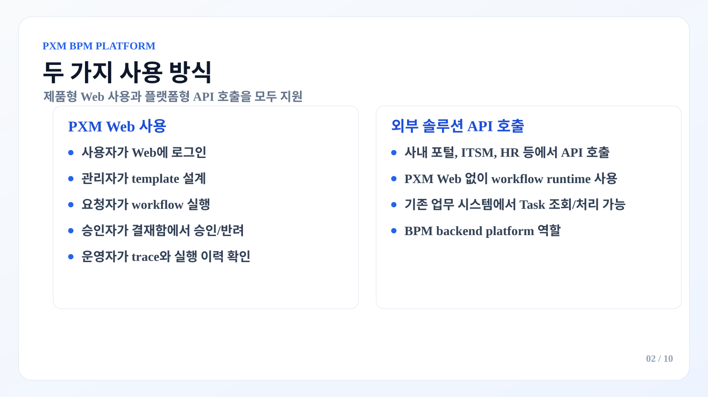
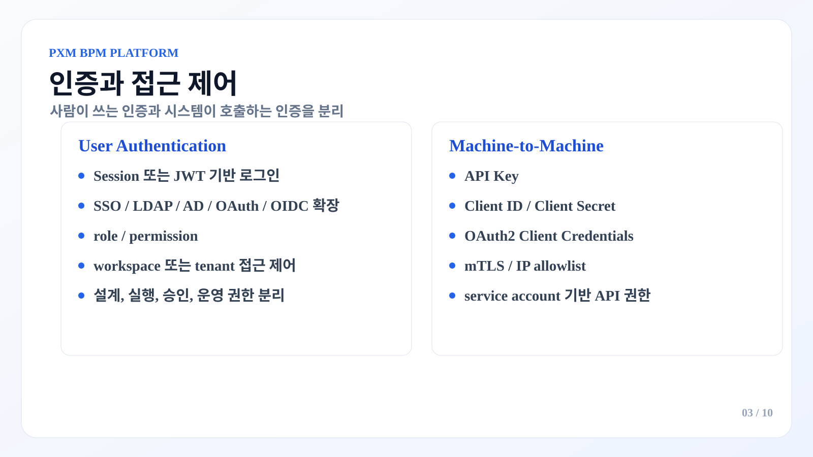
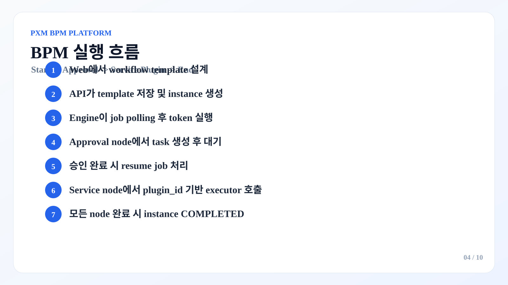
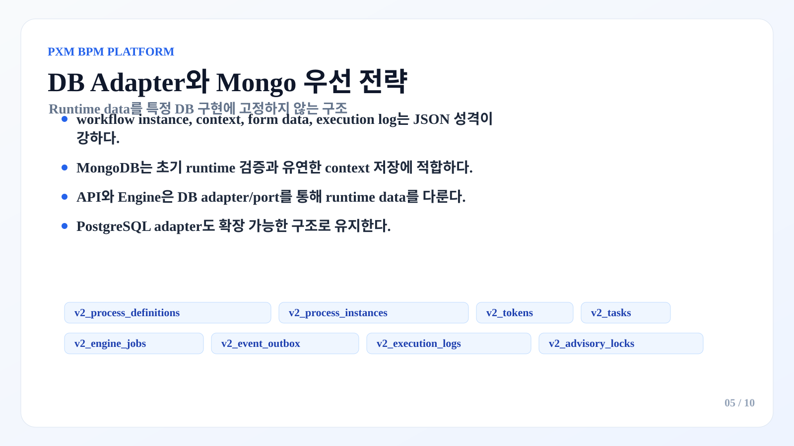
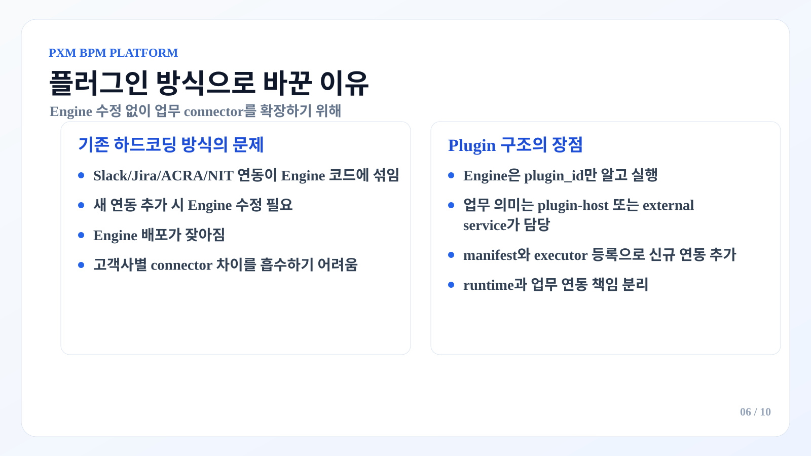
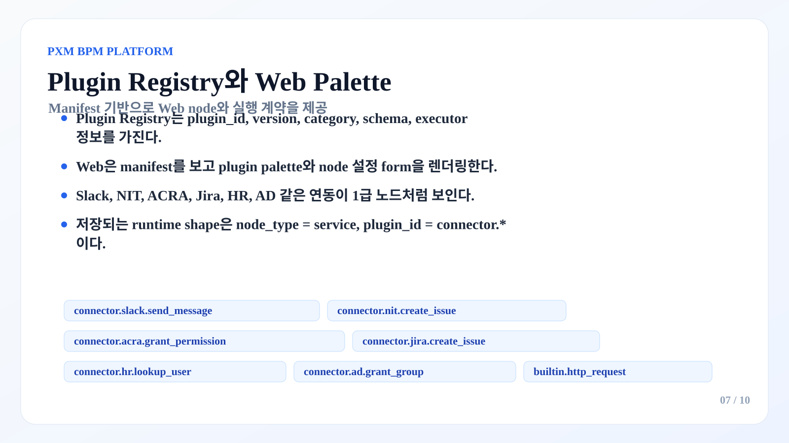
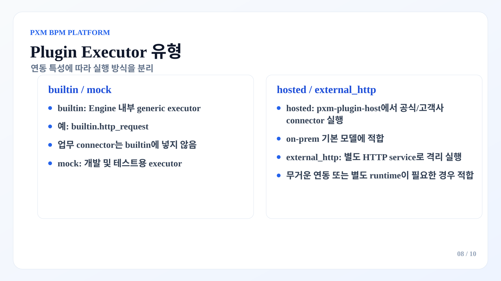
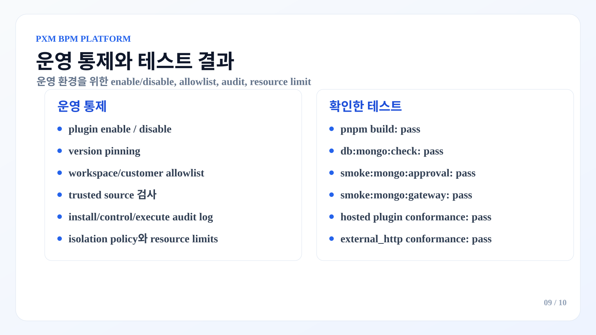
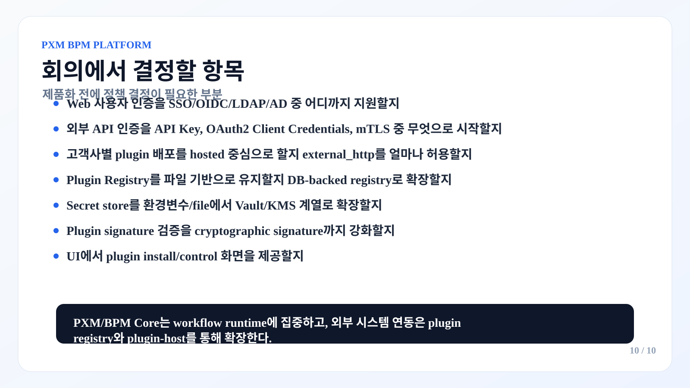

BPM/PXM 플랫폼 설명 이미지

1. PXM/BPM 플랫폼 구조 - slide-01.svg

2. 두 가지 사용 방식 - slide-02.svg

3. 인증과 접근 제어 - slide-03.svg

4. BPM 실행 흐름 - slide-04.svg

5. DB Adapter와 Mongo 우선 전략 - slide-05.svg

6. 플러그인 방식으로 바꾼 이유 - slide-06.svg

7. Plugin Registry와 Web Palette - slide-07.svg

8. Plugin Executor 유형 - slide-08.svg

9. 운영 통제와 테스트 결과 - slide-09.svg

10. 회의에서 결정할 항목 - slide-10.svg